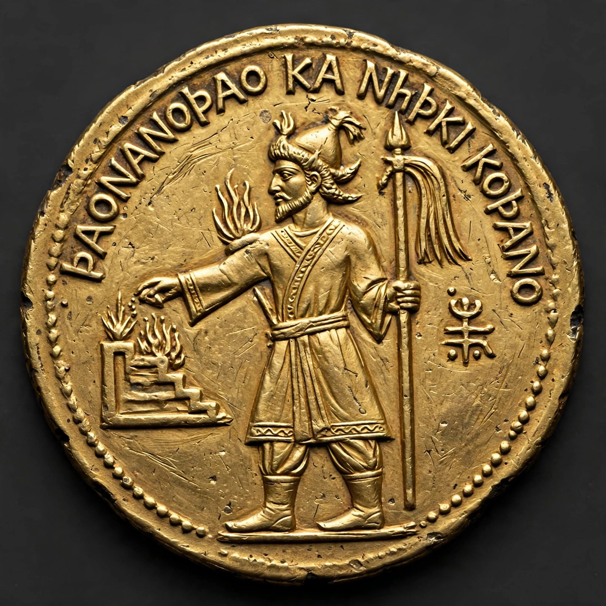

| Kanishka | |
|---|---|
| Reign | c. 127 – c. 150 AD |
| Empire | Kushan Empire |
| Capital | Purushapura (Peshawar); Mathura |
| Predecessor | Vima Kadphises |
| Successor | Huvishka |
Kanishka I (Sanskrit: कनिष्क; Bactrian: Κανηϸκε) was an emperor of the Kushan Empire who ruled an empire centred on Bactria and northern India, conventionally dated from about AD 127 to about 150. Under Kanishka the Kushan Empire reached its greatest extent, stretching from Central Asia across the Hindu Kush to the Gangetic plain, and straddling the Silk Road trade between China, India, and the Roman world. He is remembered above all as a great patron of Buddhism.
The start of Kanishka's era — long debated and now generally placed in AD 127 — was itself used as a calendar era in northwestern India for centuries. His inscriptions, such as the Rabatak inscription discovered in Afghanistan in 1993, trace his genealogy back to Kujula Kadphises and record his conquests in India. His coinage is famous for its pantheon: Greek, Iranian, Hindu, and Buddhist deities appear side by side, including some of the earliest images of the Buddha on coins, labelled ΒΟΔΔΟ ("Boddo"). Late in his reign the imperial coinage shifted from Greek to Bactrian written in Greek script.
Buddhist tradition makes Kanishka a second Ashoka: he is said to have convened a great council in Kashmir (associated with the systematisation of Sarvastivada doctrine and the Mahavibhasha commentary), and to have built the enormous Kanishka stupa at Peshawar, among the tallest buildings of the ancient world, whose reliquary — the Kanishka casket — survives. His patronage helped carry Mahayana Buddhism along the Silk Road into Central Asia and China. At his capital region of Gandhara, the Greco-Buddhist art that had flourished there reached maturity.